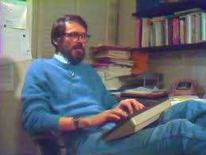

Ritchie was born in Bronxville, New York. His father was Alistair E. Ritchie, a longtime Bell Labs scientist and co-author of The Design of Switching Circuits on switching circuit theory. He moved with his family to Summit, New Jersey, as a child, where he graduated from Summit High School.He graduated from Harvard University with degrees in physics and applied mathematics